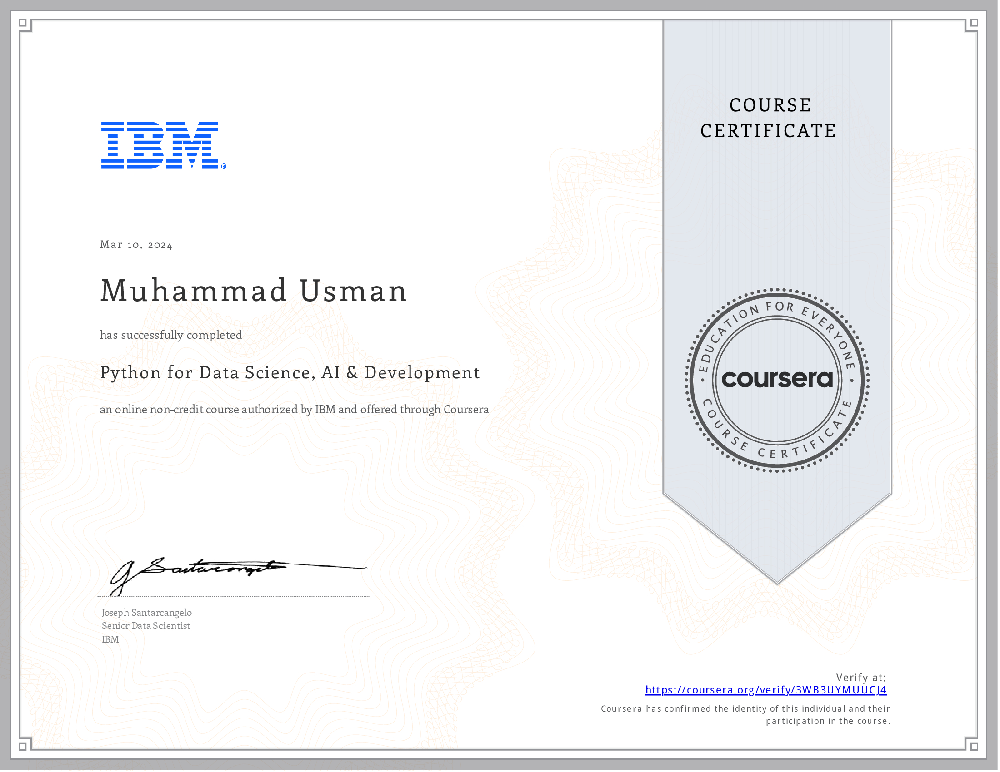

Work Smarter with Microsoft Excel
I excel in Advanced Excel functions & formulas such as,
Conditional Formatting, Simple Macros, Filters, Slicers, Timeline &
Industry Formulas (Vlookup, Hlookup & Xlookup).
Moreover, I am proficient in creating interactive dashboards in excel.
PYTHON FOR DATA SCIENCE, AI & DEVELOPMENT
Certified by IBM in "Python for Data Science, AI & Development,"
demonstrating basic and intermediate Python skills for data analysis.
